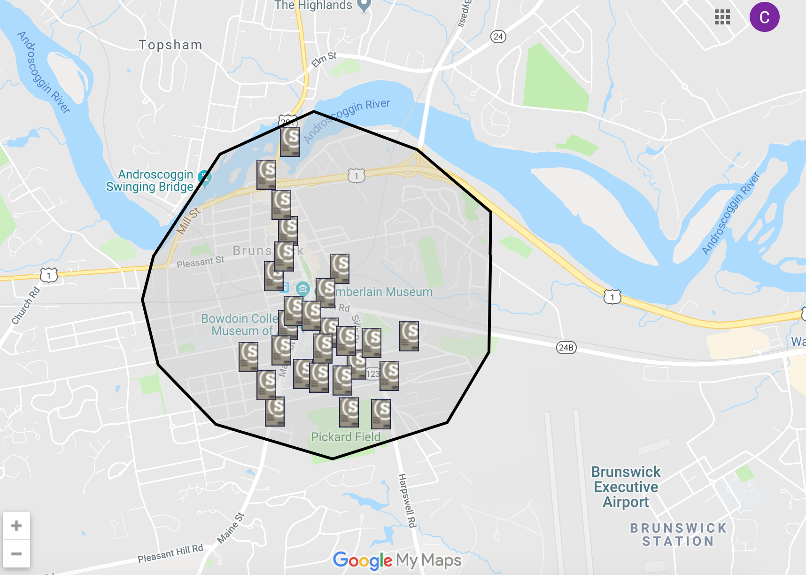

Saferide (aka the Bowdoin Shuttle) provides safe and convenient transportation for Bowdoin students within a one-mile radius of campus. It is open seven days a week. An interactive map for all the Bowdoin Saferide stops can be found
here.

Safe Ride
Hours of Operation
Sunday - Wednesday: 6 p.m. - 2 a.m.
Thursday - Saturday: 6 p.m. - 3 a.m.
Phone:
(207) 725-3337